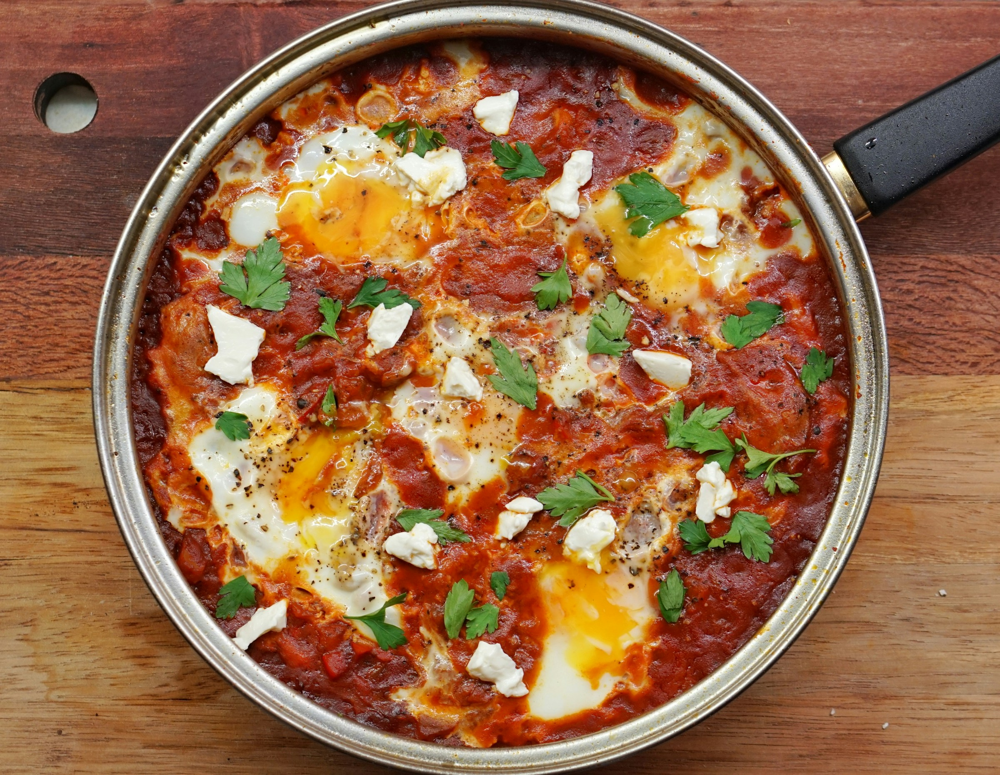

Shakshuka

Prep Time: 10 minutes
Cook Time: 20 minutes
Serving: 1 pan
A classic Middle Eastern breakfast that can feed a whole family. Serve it right in the pan with
bread to dip in.
Instructions
Sauce Ingredients
- 1-2 tbsp olive oil
- 1 tsp butter
- 3-4 whole beefsteak tomatoes. Can substitute this with other varieties or canned.
- 1/2 of a bell pepper, diced
- 1/4 of a white or yellow onion, diced
- 2 cloves of garlic, minced
- 1 tbsp tomato paste
Spices
- 1 tbsp oregano
- 1 tsp cumin
- 1 tsp paprika
- 1 tsp chili flakes
- 1/2 tsp freshly ground black pepper
- 1/2 tsp salt
Other Ingredients
- 5 eggs
- A handful of parsley
- 1/2 loaf of sourdough bread, or other bread of your choosing
- 3 tbsp or more of olive oil
Sauce Ingredients
- 1-2 tbsp olive oil
- 1 tsp butter
- 3-4 whole beefsteak tomatoes. Can substitute this with other varieties or canned.
- 1/2 of a bell pepper, diced
- 1/4 of a white or yellow onion, diced
- 2 cloves of garlic, minced
- 1 tbsp tomato paste
Spices
- 1 tbsp oregano
- 1 tsp cumin
- 1 tsp paprika
- 1 tsp chili flakes
- 1/2 tsp freshly ground black pepper
- 1/2 tsp salt
Other Ingredients
- 5 eggs
- A handful of parsley
- 1/2 loaf of sourdough bread, or other bread of your choosing
- 3 tbsp or more of olive oil
- Heat olive oil and butter on medium heat in a large, deep pan- use a pot if you don't have one.
- Once the oils are hot, place the tomatoes around the edge.
- Then place the diced onions, diced bell peppers, and minced garlic in the center.
- Cover and cook for at least 10 minutes over medium heat.
- In the meantime, slice up some sourdough and brush it with olive oil.
- Toast the sourdough slices and set aside for later. This might take a while, depending on the speed
of your toaster.
- When the tomatoes are soft, mash and stir until the mixture has a saucelike quality.
- Mix in the spices and the tomato paste.
- Reduce and simmer until any liquid on the top cooks down.
- When the sauce is somewhat thick, create 5 wells in the sauce for each egg.
- Crack one egg in each well, then cover and cook for 5 minutes or to your liking.
- When the eggs are done, remove pan from heat.
- Top with fresh parsley.
- Serve in the pan, using the toasted sourdough to scoop up heapings of your Shakshuka.
- Enjoy!